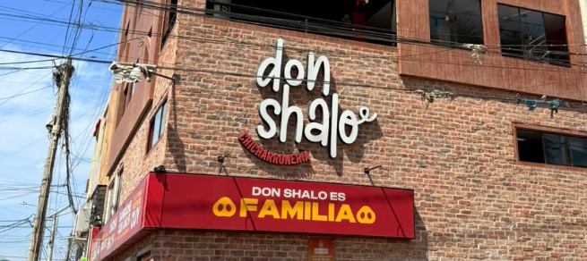
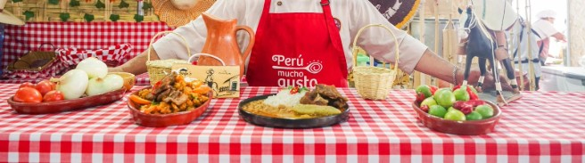

DON SHALO

Don Shalo representa la continuidad de la cocina tradicional lambayecana. Sus platos conservan técnicas heredadas y sabores que forman parte de la identidad regional.
Leer más
SEMANARIO DE GASTRONOMÍA LAMBAYECANA

El king kong lambayecano representa una tradición que ha perdurado por generaciones. Elaborado con capas de galleta, manjar y frutas, este dulce se ha convertido en símbolo de identidad cultural del norte peruano.
Más que un postre, es una experiencia compartida que conecta historia, familia y territorio.
Leer más
Don Shalo representa la continuidad de la cocina tradicional lambayecana. Sus platos conservan técnicas heredadas y sabores que forman parte de la identidad regional.
Leer másUna propuesta contemporánea que reinterpreta la gastronomía local. Combina innovación con respeto por los ingredientes tradicionales.
Leer másEn Chiclayo, los emprendimientos gastronómicos mantienen viva la tradición desde lo cotidiano. El champús con cachangas, preparado a partir de recetas familiares, no solo representa un sabor típico del norte, sino también una historia de constancia, identidad y crecimiento.
Leer más

Desde un carrito en el Paseo Las Musas hasta convertirse en un punto de encuentro en la ciudad, Las de Siempre Burger forma parte de la memoria colectiva de Chiclayo. Más que hamburguesas, representa constancia, cercanía y una historia que sigue vigente con el paso del tiempo.
Leer másEn Lambayeque, la gastronomía es una forma de identidad. Cada plato cuenta una historia que conecta a las personas con su pasado, sus costumbres y su entorno. Desde el king kong —símbolo dulce de la región— hasta los platos salados más tradicionales, la comida funciona como memoria colectiva.
Más que alimentar, la cocina lambayecana crea vínculos: reúne familias, fortalece comunidades y mantiene vivas las tradiciones. Es una identidad que no necesita reinventarse constantemente, porque encuentra su valor en la continuidad y en el sabor que perdura.